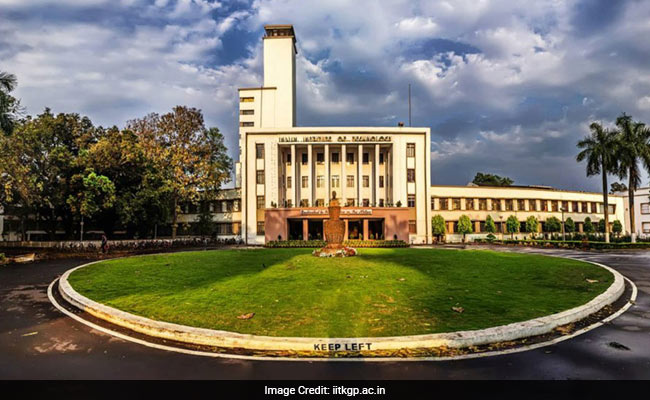
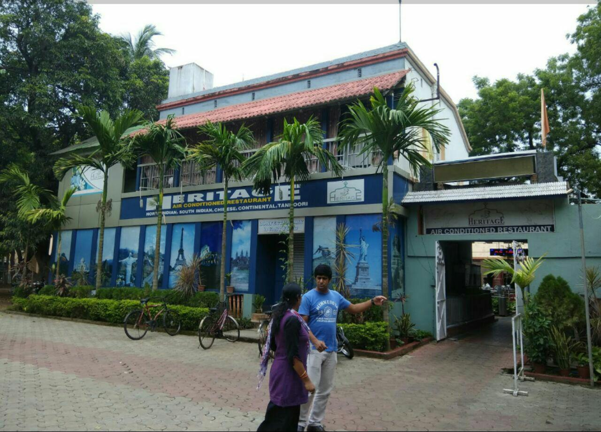

SOJOURN
Nehru Museum
Nehru Museum of Science and Technology,.Hijli Shahid Bhavan,Old Martyrs Memorial :
The place of historical significance where several youngsters had sacrificed their lives for the freedom struggle in our country and now youngsters from here (IIT KGP) lead the nation and fulfill the dreams of our great ancestors.
These sites are located side by side. Hence easily accessible.
Main Building, IIT KGP

The Indian Institute of Technology Kharagpur (IIT Kharagpur or IIT KGP) is a public engineering institution established by the government of India in 1951. It is the first of the IITs to be established, and is recognized as an Institute of National Importance by the Government of India.
Kharagpur Railway station
Kharagpur Junction came up in 1898-99. On one side, Bengal Nagpur Railway’s Kharagpur-Cuttack line was opened on New Year’s Day in 1899. On the other hand, the opening of the bridge over the Rupnarayan River at Kolaghat, on 19 April 1900, connected Howrah with Kharagpur. Kharagpur was also linked with Sini the same year. The line was ready in 1898-99. The Kharagpur-Midnapore branch line was opened to traffic in 1901.
Gymkhana
The name is itself suggestive of what you get here. Starting from the obvious gym to swimming pool, you can literally play every sport here. Squash, badminton, weightliftimg and much more.
Sports Complexes

You also have the Jnan Ghosh stadium and Tata Sports Complex for major team sports like cricket, football, hockey.
You can also play water polo here in the swimming pool.
DINE
Dreamland Restaurant
Come with your family and feast in the open air. With cheap prices and awesome food its an ideal eatout.
Heritage Restaurant

An AC restaurant with good food and environment to spend with your near and dear ones. A bit pricy but its worth it.
Café Coffee Day
If you wanna chill and hangout with your friends over a cup of cold coffee, then this is the perfect place.
Billoos Restaurant
Coming late from TFPS movie in Netaji and mess is closed, then don’t worry. Peace maro and have your dinner here.
DOZE
Technology Guest House
Now that you have done enough of study at the Central Library and enough of play at Gymkhana, you must be feeling tired. But now what, you have not booked any hotel outside the campus.
Visveswaraya Guest House
You have excellent guest houses in our campus. The price might bite your pockets but they are worth it.
CEC Guest House
A smaller yet cozy guest house located near the Visveswaraya Guest House.
KGP LINGO

While conversing with the so called KGPians you might find out new terms which carries no sense to you. But peace maro(once again a lingo). Here is a list of lingos with their meanings elaborated. Our lingo is unique and not borrowed from any other institute (not hoping to demean Jadavpur University and IIEST Shibpur which has the same lingo for chill i.e. cazz and alsmost every other thing).
2.2 n. A 2.2 Kilometres round in central part of IIT-KGP campus. Usu. A run of it.
Acads n. Academics.
DepC v.t., v.i. To have a Department change under the provisions specified by IIT-KGP. Requires excellent academic performance in first year B. Tech. course.
Despo n. Desperate.
D.P. abbr., n. Durga Puja. The vacation in its duration
Dude n. Dual Degree Students.
D.O.S.A. abbr., n. Dean Of Student Affairs. Responsible for maintaining discipline in students.
Facca n. An F-grade in any subject, meaning fail.
Faccha n. A first year male student. Usu. a B. Tech. student.
Facchi n. A first year female student. Usu. a B. Tech. student.
Ghaasi n. A student of Agriculture Engineering Department.
Gymkhana n. Technology Students Gymkhana (T.S.G.). The centre of all the extra-curricular students' activities. Organizes various events and competitions for students.
Hall n. (Halls Of Residence). Word used for hostel in IIT-KGP. The latter is rarely used. The Halls accommodate students who study in IIT-KGP. All Halls have their separate Mess, Canteens, Grocery & Stationery Shops, etc. There are separate halls for B.Tech students, M.Tech students, Business Management students and Research Scholars.
Hall-funda n. The knowledge of one's Hall specialties and way of life, etc.
Hathora n. The Mechanical Engineering Department. Also, the students of it.
Indu n. The Industrial Engineering & Management Department. Also, the students of it.
Insti n. Institute. Used to refer the main building of IIT-KGP.
Insti gate n. The large gate on the entrance of the academic complex.
Junta n. The human population. Of IIT-KGP or elsewhere.
Kam-akal n. A student of Chemical Engineering Department.
Load n. Tension; v.i. To Have Tension.
Machuara n. The Ocean Engineering and Naval Architecture Department. Also, the students of it.
Maska n. The 2 year M.Sc. students. n. The Maths & Computing Stream. Also, the students of it.
Matka n. Any M. Tech. male student.
Matki -n. Any M. Tech. female student.
Tech-mart n. Technology Market. A market inside IIT-KGP premises.
Tempo n. Enthusiasm and vigour.
Tempo shout v.i. To shout in a singing manner "KGP Ka Tempo High Hai". Of KGP or of some similar affiliations like Hall; n. The shout "KGP Ka Tempo High Hai".
T.H.O.K. abbr., n. Thick Heads Of KGP. A student of Electronics and Electrical Communications Engineering Department.
Vegies n. The Vegies Restaurant. Located on the Scholar's Avenue.
V.G.S. abbr., n. Vishveshwaraiyya Guest House.
Peace excl., n., v.i., To be tension-free. A tension-free state.